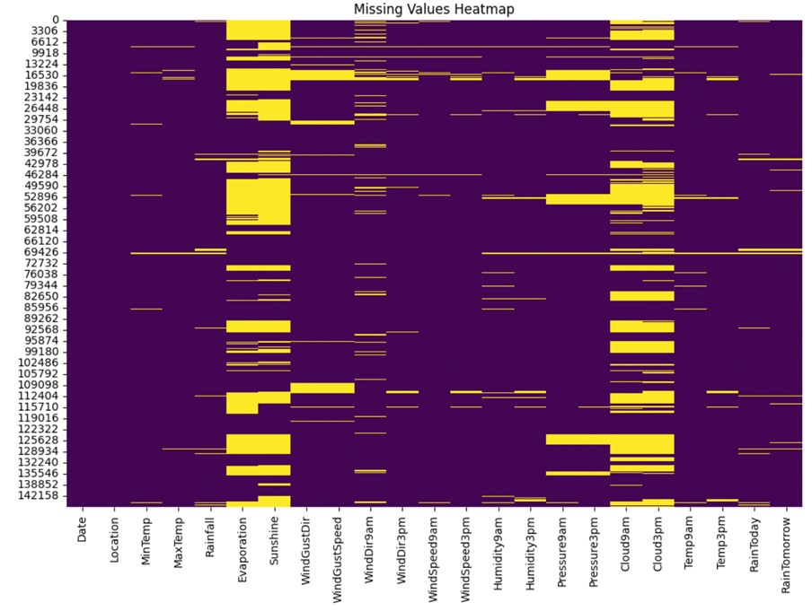

Rainfall Prediction Using Machine Learning
Predicting Rain with Decision Tree, Random Forest, Naive Bayes & ANN

Missing Values Heatmap
Project Overview
- Objective: Predict whether it will rain tomorrow in Australia using 10 years of historical weather data.
- Tools Used: Python (scikit-learn, pandas, matplotlib), Jupyter Notebook
Problem Statement
Traditional weather forecasting struggles with high-dimensional data. This project uses machine learning models to predict rainfall based on historical weather data collected across Australia, enabling more accurate and timely weather forecasting.
Models Used
- Decision Tree Classifier
- Random Forest Classifier
- Gaussian Naive Bayes
- Artificial Neural Network (ANN)
Data Processing
- Missing value handling using mean/mode imputation
- Label encoding of categorical features
- Train-test split with class balancing
- Performance evaluation using accuracy, precision, recall, and F1-score
Results
- Random Forest: Achieved 85% accuracy with balanced precision and recall
- Naive Bayes: High recall for rain detection, useful for safety-critical use cases
- ANN: Faced challenges due to class imbalance, requiring further tuning
Key Insights
- Strong class imbalance impacted model performance; oversampling techniques recommended
- Random Forest emerged as the most robust model with generalizable results
- Feature selection revealed "Humidity at 3pm" and "Rain Today" as strong predictors